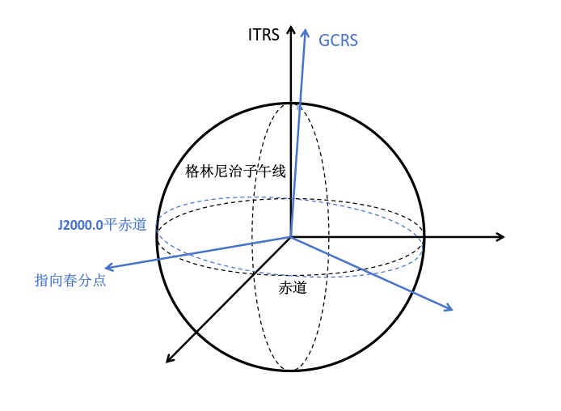

天体测量变换链
参考系
确定一个三维空间参考系需要三个要素：
-
原点
-
基本平面（$xy$平面）
-
基本方向（$x$方向）
两个目标参考系
- 地心天球参考系 (geocentric celestial reference system, GCRS)
- 国际地球参考系 (international terrestial reference system, ITRS)

“中间参考系”
由于地球进动，地球自转轴在天球参考系 CRS 中具有瞬时性，天极和天赤道也一样。《IERS规范2003》称具有瞬时性的天极和天赤道为：
-
中间赤道
-
天球中间极 (celestial intermediate pole, CIP)
-
天球中间零点 (celestial intermediate origin, CIO) ：相对天球参考系没有转动
-
地球中间零点 (terrestrial intermediate origin, TIO) ：相对地球参考系没有转动
在天球参考系中观察，中间赤道与 CIO 固结，称为天球中间赤道，TIO 沿着赤道逆时针方向运动，周期为一恒星日。反之，在地球参考系中观察时，中间赤道与 TIO 固结，称为地球中间赤道，CIO 以同样周期沿赤道顺时针方向运动。


-
地球自转角 (earth rotating angle, ERA) ：CIO 和 TIO 之间的夹角。
-
格林尼治恒星时 (Greenwich sidereal time, GST) ：春分点和 TIO 之间的夹角。
“中间参考系”
- 真赤道系： 以真春分点为基本方向，与之一同转动的赤道就是真赤道
- 天球中间参考系 (celestial intermediate reference system, CIRS) ：以 CIO 为基本方向
- 地球中间参考系 (terrestrial intermediate reference system, TIRS) ：以 TIO 为基本方向
- 平赤道系： 只考虑岁差不考虑章动的情况，相当于真赤道坐标系在一段时期内的平均位置，相应的基本平面和基本点为平赤道和平春分点
确定 CIO
通过分析中间极和中间赤道在 GCRS 中的运动来确定天球无转动零点 CIO

图中 $(\boldsymbol{e}_1,\boldsymbol{e}_2,\boldsymbol{e}_3)$ 为 GCRS， $(\boldsymbol{e}_1',\boldsymbol{e}_2',\boldsymbol{e}_3')$ 为 CIRS 。$\boldsymbol{u},\boldsymbol{v},\boldsymbol{v}'$ 分别为交线和投影线向量， CIP 向量 $\boldsymbol{e}_3'$ 的空间位置由经角 $E=<\boldsymbol{e}_1,\boldsymbol{v}>$ 和余纬角 $d=<\boldsymbol{e}_3,\boldsymbol{e}_3'>$ 确定，有 $$ \boldsymbol{e}_3=\cos d\boldsymbol{e}_3'-\sin d\boldsymbol{v}' $$

故中间系绕原点的转动总角速度向量为 $$ \boldsymbol{\omega}=\dot{E}\boldsymbol{e}_3+\dot{d}\boldsymbol{u} $$ 可以分解为 $$ \boldsymbol{\omega}=\dot{E}\cos d\boldsymbol{e}_3'+(-\dot{E}\sin d\boldsymbol{v}'+\dot{d}\boldsymbol{u}) $$
天球中间零点定位角
在历元 $t_0$ 时，$\boldsymbol{v}'$ 与 $\boldsymbol{e}_1',\boldsymbol{e}_1$ 重合，随后以角速度 $\dot{E}\cos d$ 沿中间赤道运动。故
记天球中间零点定位角
则 $<\boldsymbol{e}_1',\boldsymbol{v}'>=E+s$
式中，常数 $s_0$ 取决于初值，如果忽略历元偏置和章动则为零。
参考系变换

ITRS-TIRS
$$ [\mathrm{TIRS}]=\boldsymbol{W}(t)[\mathrm{ITRS}] $$
TIRS-CIRS
$$ [\mathrm{CIRS}]=\boldsymbol{R}_z(-ERA)[\mathrm{TIRS}] $$
CIRS-GCRS (CIO变换)
$$ \boldsymbol{Q}(t)=\boldsymbol{R}_3(-E)\boldsymbol{R}_2(-d)\boldsymbol{R}_3(E)\boldsymbol{R}_3(s) $$ $$ [\mathrm{GCRS}]=\boldsymbol{Q}(t)[\mathrm{CIRS}] $$
综合

$$ [\mathrm{GCRS}]=\boldsymbol{Q}(t)\boldsymbol{R}_z(-ERA)\boldsymbol{W}(t)[\mathrm{ITRS}] $$
对比利用春分点和 CIO 两种变换方法
| 春分点 | CIO |
|---|---|
 |
 |
 |
 |
| $[\mathrm{GCRS}]=\boldsymbol{Q}_e(t)\boldsymbol{R}_z(-GST)\boldsymbol{W}(t)[\mathrm{ITRS}]$ | $[\mathrm{GCRS}]=\boldsymbol{Q}(t)\boldsymbol{R}_z(-ERA)\boldsymbol{W}(t)[\mathrm{ITRS}]$ |